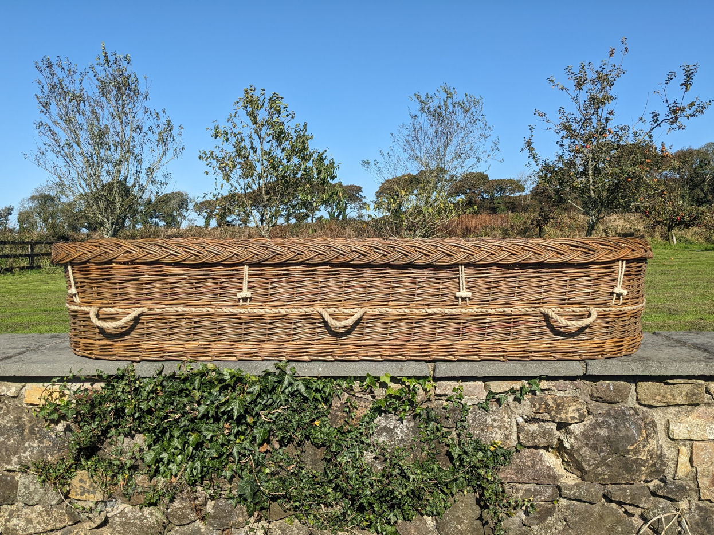
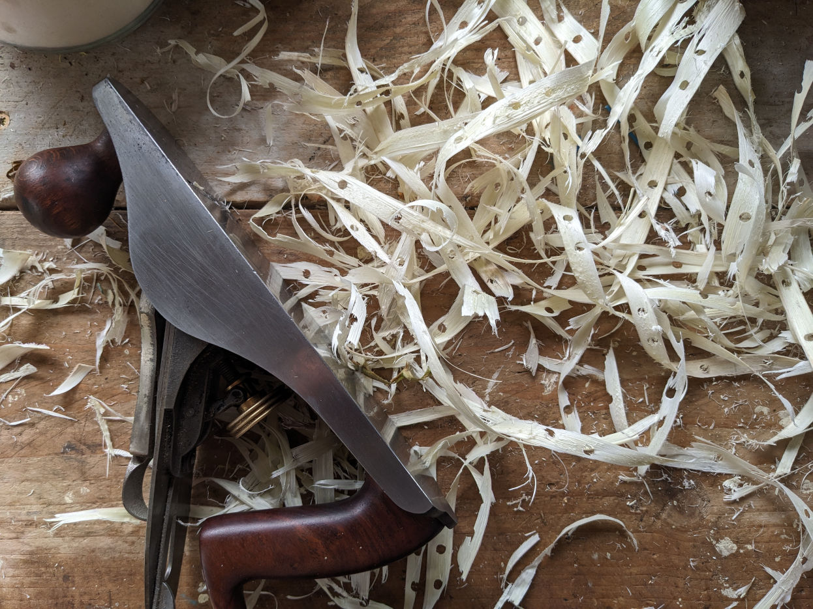
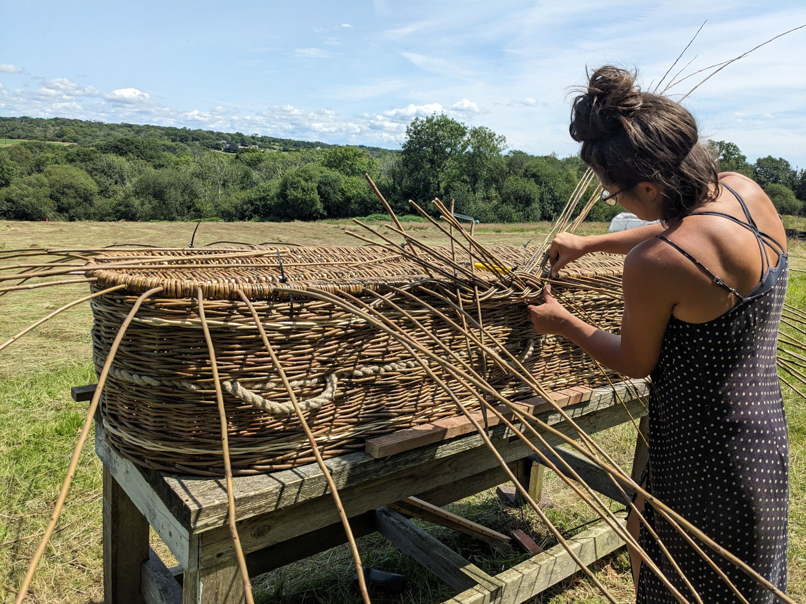
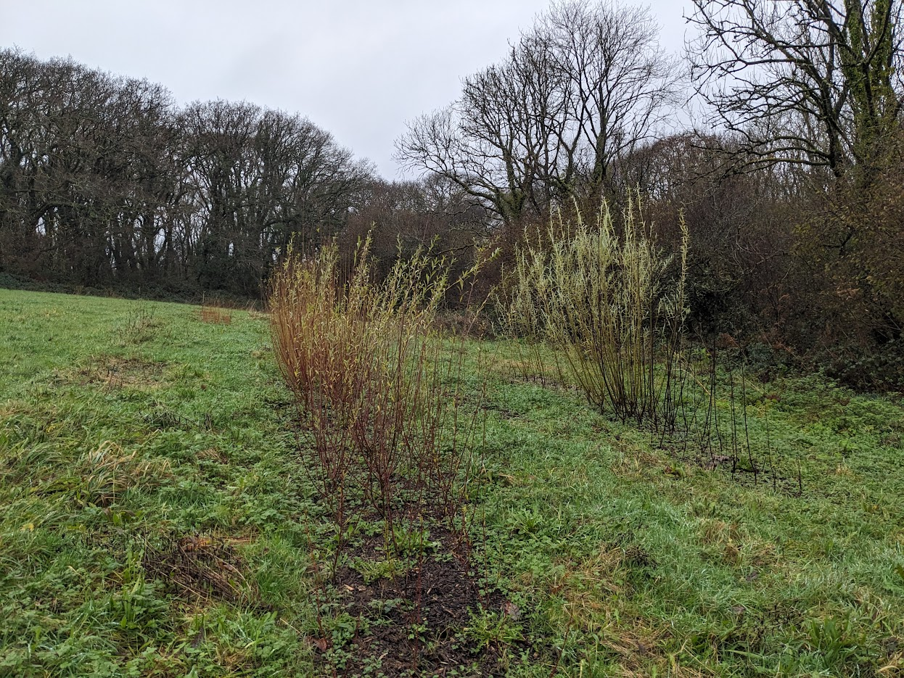
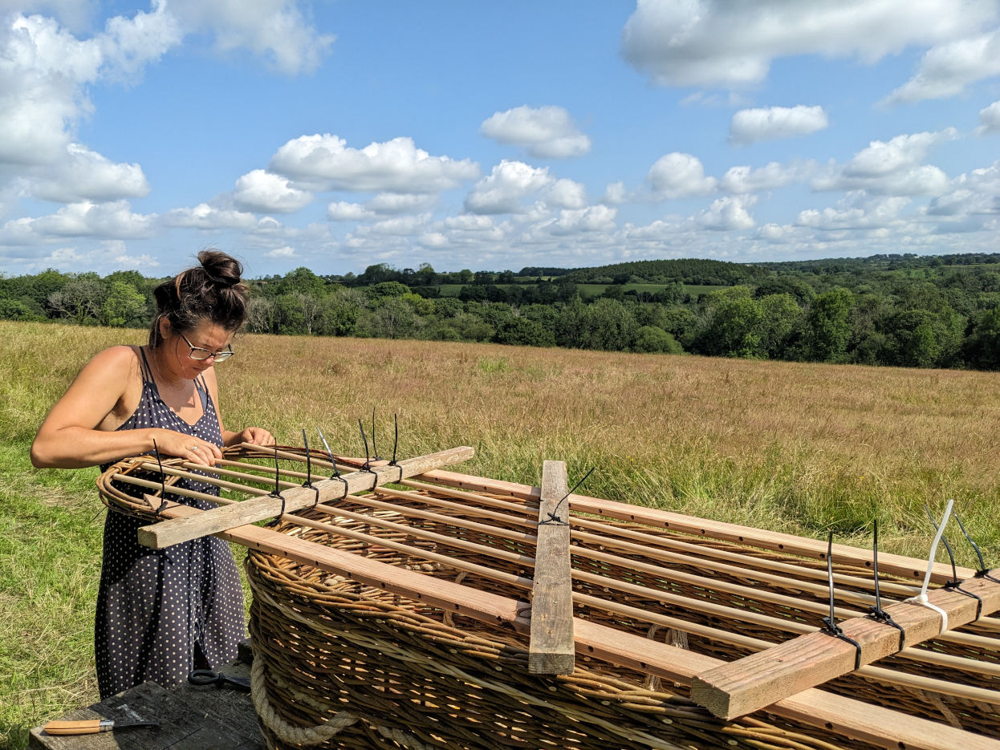

Woven Willow Coffins
Pembrokeshire Woven Coffins was founded to offer families a meaningful alternative to mass-produced coffins. We believe that a coffin can be a beautiful item, handmade with care and with respect of the environment.
Each coffin is woven by hand using willow grown on our small farm in Pembrokeshire.
Our work is guided by our desire to have a light touch on the planet whilst building strong and impactful connections with the community. We work closely with families and funeral directors to ensure everything feels calm, straightforward and supportive at a difficult time.
For more information or inquiries, please get in touch.

Pembrokeshire Woven Coffins was founded to offer families a meaningful alternative to mass-produced coffins.
Meet our Team
Liv, is an experienced basket maker and tutor with a passion for growing and weaving willow. She came to weaving coffins through a desire to help people through difficult times, support her community and create an environmentally sustainable alternative to conventional coffins.
Luke is a skilled woodworker and an enthusiastic ecologist. He can often be found in the willow beds, helping with planting and harvesting, or in the workshop, helping with weaving and construction. Luke is responsible for our online presence and helps with the day-to-day running of the business.
We aim to create a calm and supportive space for people to feel connected to their loved ones by being as involved in the coffin making process as they wish, creating some space and compassion for people during a difficult and stressful time. From planting or harvesting willow, to design ideas and participating in the weaving, families and friends are welcome to visit.
Additionally, we are fortunate to be surrounded by a circle of skilled and trusted weavers. This extended team provides support when required and helps bring innovation and energy to our work.


Our Products
All coffins are suitable for natural and conventional burial, as well as cremation. We supply directly to families and through partnered funeral directors.
As willow is a natural material, colour and texture will vary subtly depending on season and the available varieties. These variations are part of what makes each coffin unique.
If you have particular preferences or would like subtle custom touches, we're always happy to discuss what's possible.
Brown Oval Willow Coffin
A warm, earthy finish made using natural brown willow which retains its bark. Usually constructed using an OSB base, this coffin is also available with a woven base.
£750 for any size.

Brown and White Willow Oval Coffin
A brown willow coffin with subtle and beautiful white accents. The stripes are created using a specialist white willow which has been stripped of its bark to reveal the colour of the wood inside.
£850 for any size.
Wooden Name Plate
A simple wooden name plate to be attached to any of our willow coffins. The name plate is made from a single piece of locally-sourced timber and professionally laser-engraved.
Please discuss with us exactly what you'd like engraved or choose a blank name plate if you'd like to paint and decorate it yourself.
£25 for a blank name plate. £45 for an engraved name plate.

Woven Base
An all natural, hand woven willow base in brown willow.
£300 to fit any coffin.
Sustainable Materials
Willow
Willow is an exceptionally sustainable material. It grows quickly and regenerates after harvest, meaning that the tree remains alive whilst its timber can still be used.
All of the willow from our Pembrokeshire small holding has been planted, harvested, graded and woven by hand. There is no need for industrial processing or heavy machinery.
To meet demand and to provide specialist buff and white willow, additional willow is purchased from a family farm in Somerset and an independent grower in Swansea.

Coffin Base
Our coffins are made with an OSB base (a board made by compressing wooden fibers). This is incredibly strong and, once weaving is complete, is not visible from the side.
We are able to provide a woven base at an extra cost for a fully natural option. Our woven bases are made using willow and a locally-sourced timber framework. Please note that woven bases are not compatible with cremation but may be required by some natural burial grounds. We are able to advise you and to communicate with burial grounds to decide which option is best for each circumstance.
Both woven and OSB bases are fully biodegradable.
Local Timber
The lid for each coffin is supported by a framework of locally-sourced timber. We work closely with a a local sawmill, using logs grown in Pembrokeshire or the neighbouring county of Carmarthenshire.

Biodegradable Lining
All of our coffins are double-lined: first with a biodegradable cornstarch and finished in a beautiful calico cotton. The calico is undyed to preserve the natural colour and texture of the fabric, providing a clean and elegant finish. Each lid is finished in the same calico fabric as the body of the coffin.
Finishing Touches
Coffins are available with either an OSB base or an all-willow woven base for a fully natural option (which may be required by some natural burial grounds).
Each coffin is finished with natural rope handles and handmade wooden toggles fastened using hemp cord. No plastics, varnishes, or synthetic fabrics are used.
Fully biodegradable, our coffins are suitable for natural burial grounds as well as conventional burial and cremation.

Frequently Asked Questions
Are willow coffins suitable for cremation?
Yes. Our willow coffins are made with an OSB base that meets crematorium requirements.
How long does a willow coffin take to make?
Our coffins take up to 3 days to make. However, the willow needs to be soaked for up to a week before weaving so please allow a total time of up to 10 days. We also keep a small stock of coffins ready to order.
How much does a willow coffin cost?
Our coffins start from £750.
What are the benefits of choosing a willow coffin?
Our willow coffins are extremely environmentally friendly and are using completely biodegradable materials, making them suitable for natural burial. The willow used in our coffins is grown in the UK and the coffins are handwoven here in Pembrokeshire, resulting in a very small carbon footprint. We also believe that willow coffins are incredibly beautiful!
Can you see through a woven coffin?
No. Our coffins are double-lined with biodegradable cornstarch and unbleached, natural calico cotton to ensure a clean and professional finish.
Do you supply funeral directors?
We work directly with families and with funeral directors across Pembrokeshire and the UK.
Can you send a coffin by post?
We can arrange a trusted courier to deliver your coffin safely. Please get in touch for an up-to-date quote.
Can I plan ahead?
Yes. Many people choose to plan ahead, and we are happy to discuss options without pressure.
Contact Us
We're here to help with any questions or to discuss your requirements. Please don't hesitate to reach out.
You can contact us via email at liv@pembrokeshirewovencoffins.com or by calling us on 07443 512806.